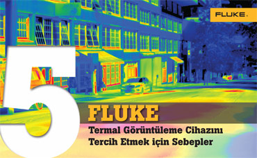

YENİ model
cok uygun fiyatlarla satışta
2,5 kata¹ kadar daha fazla PİKSEL
[ FARKI GÖRÜN ]
Büyük bir soruna işaret edebilen küçük ayrıntıları hızlı bir şekilde belirlemenize yardımcı olan kullanımı kolay ve yüksek performanslı bir termal görüntüleme cihazına ihtiyacınız var.

- Endüstri, ticaret ve bina profesyonellerinin Fluke termal görüntüleme cihazlarını tercih etmesini sağlayan ilk 5 nedeni keşfedin
- Kızılötesi görüntüleri kolayca yakalamasını ve analiz etmesini sağlayan sağlam tasarımı ve yenilikçi özellikleri öğrenin
- Özel ihtiyaçlarınıza uygun olan bir termal görüntüleme cihazı bulmak için modelleri karşılaştırın
¹Fluke Ti1xx modellerine kıyasla